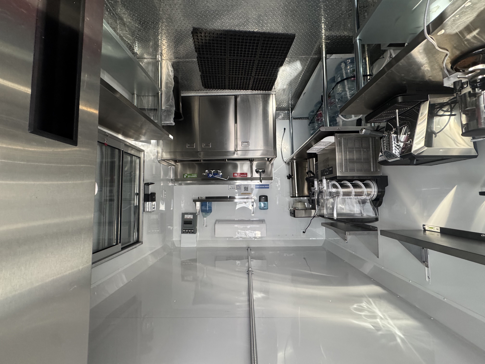
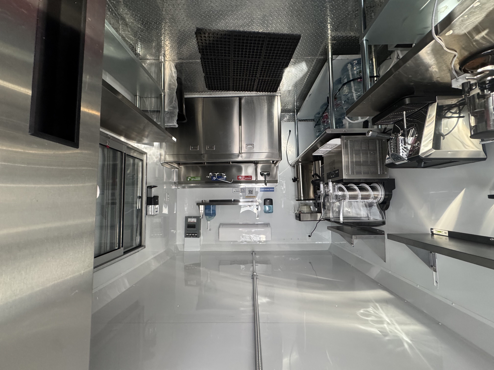

About Resilient Luv
Resilient Luv Coffee was born out of a deep love for community, family, and the unshakable belief that love will always prevail. What started as a simple dream grew into something much more when Anthony and I put our heads and hearts together, a space to gather, to ground, and to grow together, one cup at a time.
We’re both deeply rooted in the values of connection and care. Between us, we have six amazing kids, three beautiful grandkids, and a whole extended circle of folks who are our chosen family, people who’ve walked with us, supported us, and shared in both our struggles and our celebrations. Resilient Luv is a reflection of that journey. It’s not just coffee, it’s a tribute to the people and the moments that keep us going.
Our mobile coffee stand was created to be more than a business. It’s a place where people can pause, share a laugh, tell their story, and feel held where every sip is infused with the resilience it takes to get through hard times, and every drip carries the love we pour into our communities every day.
Whether you're stopping by for your morning pick-me-up or treating yourself to one of our sweet treats, we hope you feel the warmth and strength that Resilient Luv was built on.
Welcome to the family
 
